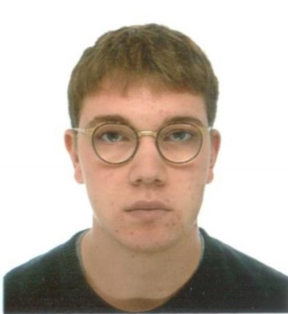

Marco Sousa-Poza
My name is Marco Sousa-Poza, and I am currently pursuing my master's degree in Data Science at RWTH Aachen University in Germany. At the moment, I am on an Erasmus exchange at Politecnico di Milano (PoliMi). I completed my bachelor's degree at Radboud University in the Netherlands, and originally, I am from Switzerland, where I completed my high school education at Kantonsschule in Trogen, Appenzell Ausserrhoden.
My academic interests are primarily focused on Artificial Intelligence (AI), particularly in developing mechanisms that can learn autonomously. Currently, I am specializing in Machine Learning, High-Performance Computing (HPC), and Distributed Computing.
Skills
- Programming Languages: Python, C, C++, Java, Haskell, Rust, Modular
- Data Science Tools: pandas, numpy, PyTorch
Although I don't have professional work experience in Computer Science yet, I am passionate about building strong foundations in the field and exploring opportunities in AI, ML, and HPC.
If you'd like to see more of my work, please visit my Projects page.